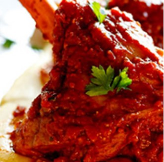

Lamb Shank Recipe

Ingredients
- 4 lamb shanks
- 2 tins chopped tomatoes
- 2 tins water, (I use the chopped tomato tins)
- 1 bay leaf
- 1 small tin tomato paste
- 6 a few sprigs of thyme
- 1 tsp cracked black pepper
- 1/2 cup polenta
- 1/2 cup cold water
- 4 tsp salt
- 75 g salted butter, cut into cubes
- 50 g parmesan, grated
- steamed green beans, to serve
Cooking Instructions
- Pre-heat the oven to 180°c.
- Place the lamb shanks in a oven-proof roasting dish.
- In a bowl, combine the chopped tomatoes, water, tomato paste, salt and pepper and pour over the lamb shanks.
- Add the bay leaf, thyme and garlic and cover the dish with a lid or foil.
- Place in the oven and allow to braise for 2-3 hours until the lamb shanks are cooked through and fall-off-the-bone tender.
- To make the polenta, bring the water and salt to a boil in a large pot.
- Slowly stir in the polenta until the mixture is lump free. Turn the heat down and allow the polenta to cook for 15-20 minutes stirring frequently until the polenta is thick and cooked through.
- Remove from the heat and beat in the butter and the cheese.
- Serve the polenta topped with the lamb shanks with some of the tomato sauce spooned over with the green beans.